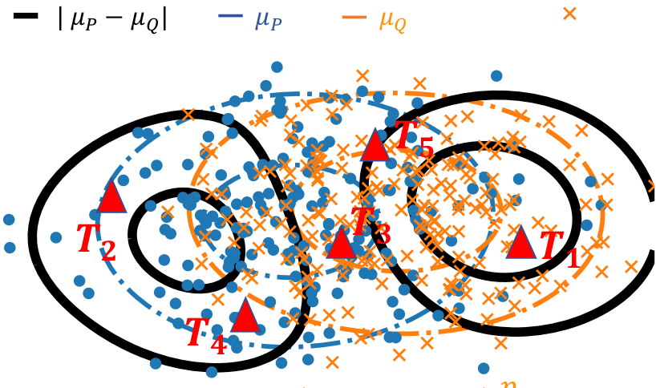
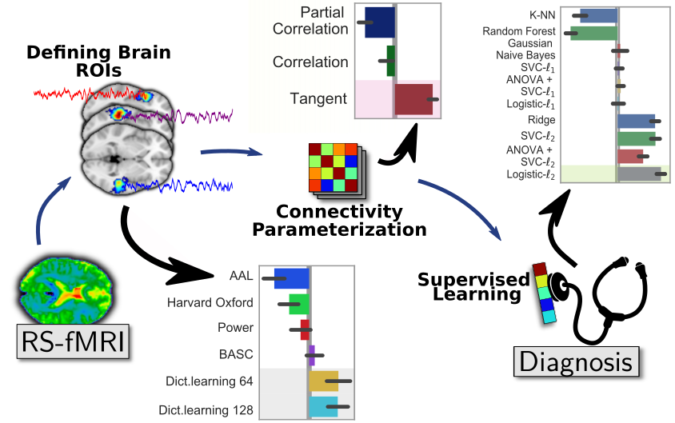
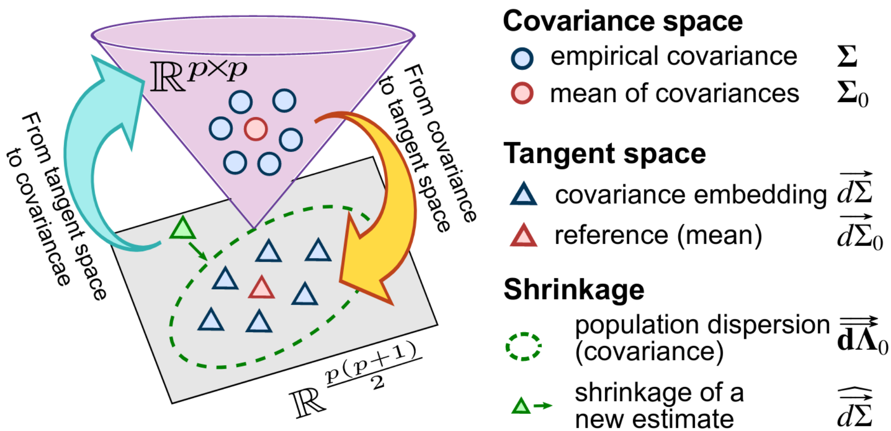
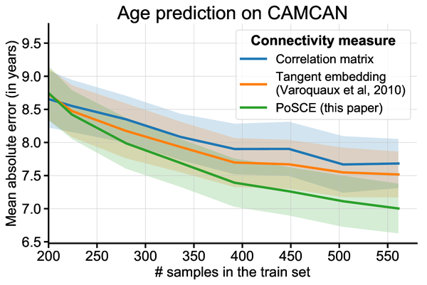
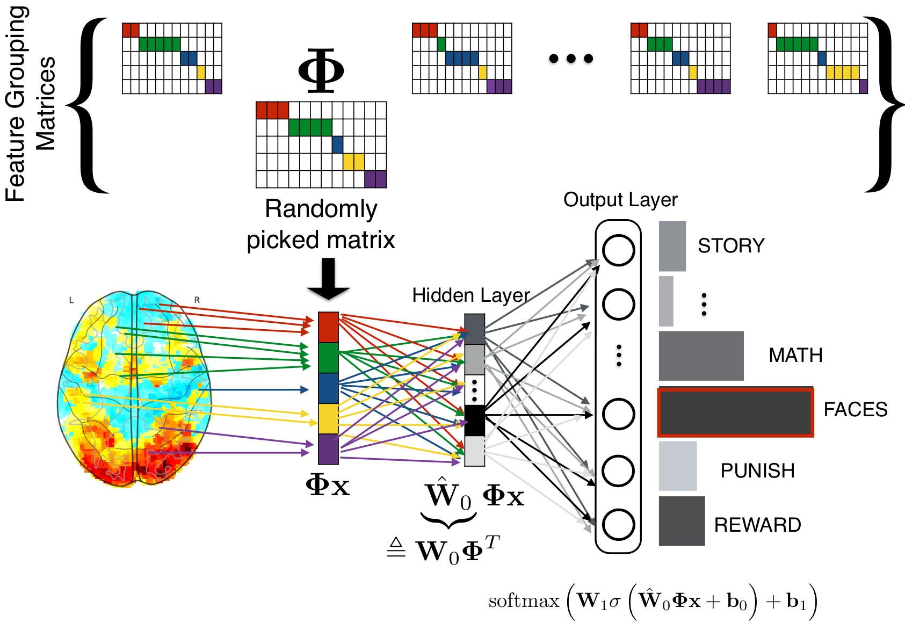
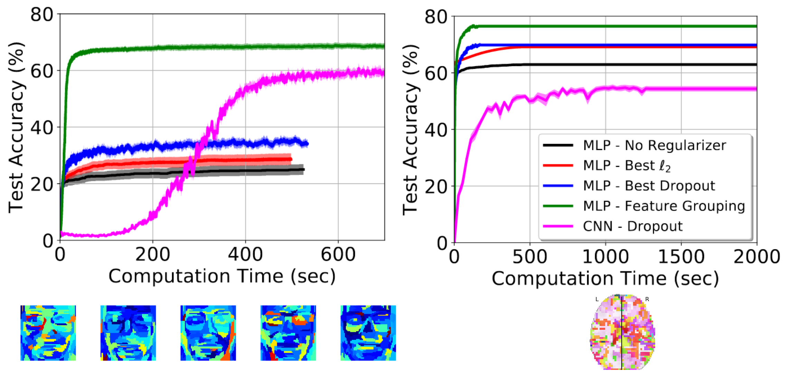

My current research spans wide: from brain sciences to core data science. My overall interest is to build methodology drawing insights from data for questions that have often been addressed qualitatively. If I can highlight a few publications from 2019 [1], the common thread would be computational statistics, from dirty data to brain images. Let me try to give the gist of these progresses, in simple terms.
| [1] | It’s already 2020, I’m always late. |
Highlights
Comparing distributions
Fundamental computational-statistics work
What if you are given two set of observations and need to conclude on whether they are drawn from the same distribution? We are interested in this question for the DirtyData research project, to facilitate analysis of data without manual curation. Comparing distributions is indeed important to detect drifts in the data, to match information across datasets, or to compensate for dataset biases.
Formally, we are given two cloud of points (circle and crosses in the figure below) and we want to develop a statistical test of whether the distributions differ. There is an abundant literature on this topic, that I cover in a more detailed post on this subject. Specifically, when the observations have a natural similarity, for instance when they live in a vector space, kernel methods are interesting because they enable to estimate a representant of the underlying distribution that interpolates between observations, as with a kernel density estimator.

Two cloud of points, the corresponding distribution representants μ_P and μ_Q (blue and orange), the difference between these (black), and locations to measure this difference (red triangles).
With Meyer Scetbon, in Scetbon & Varoquaux, NeurIPS, we investigate how to measure best the difference between these representants. We show that the best choice is to take the absolute value of the difference (the l1 norm), while the default choice had so far been the Euclidean (l2) norm. In a nutshell, the reason is that the difference most like is dense when the distributions differ: zero almost nowhere.
We were able to show that the sophisticated framework for efficient and powerful tests in the Euclidean case carries over to the l1 case. In particular, our paper gives efficient testing procedures using a small number of locations to avoid costly computation (the red triangles in the figure above), that can either be sampled at random or optimized.
My hunch is that the result is quite general: the l1 geometry is better than the l2 one on representants of distributions. There might be more fundamental mathematical properties behind this. The drawback is that the l1 norm is non smooth which can be challenging in optimization settings.
Predictive pipelines on brain functional connectomes
Brain-imaging methods
Brain functional connectivity is increasingly used to extract biomarkers of behavior and mental health. The long-term stakes are to ground assessment of psychological traits on quantitative brain data, rather than qualitative behavioral observations. But, to build biomarkers, there are many details that go in estimating functional connectivity from fMRI, something that I have studied for more than 10 years. With Kamalakar Dadi, in Dadi et al, we ran thorough empirical benchmarks to find which methodological choices for the various steps of the pipeline give best prediction across multiple cohorts. Specifically, we studied 1) defining regions of interest for signal extraction, 2) building a functional-connectivity matrix across these regions, 3) prediction across subjects with supervised learning on these features.

Summarizing our benchmark results.
Results show the importance of defining regions from functional data, ideally with a linear-decomposition method that produces soft parcellations such as ICA or dictionary learning. To represent connectivity between regions, the best choice is tangent-space parametrization, a method to build a vector-space from covariance matrices (more below). Finally, for supervised learning, a simple l2-penalized logistic regression is the best option. With the huge popularity of deep learning, it may surprise that linear models are the best performer, but this is well explained by the amount of data at hand: a cohort is typically less than 1000 individuals, which is way below the data sizes needed to see the benefits of non-linear models.
A recent preprint, Pervaiz et al from Oxford, overall confirms our findings, even though they investigated slightly different methodological choices. In particular, they find tangent space clearly useful.
In my eyes, such benchmarking studies are important not only to improve prediction, but also to reduce analytic variability that opens the door to inflation of reported effects. Indeed, given 1000 individuals, the measure of prediction accuracy of a pipeline is quite imprecise (Varoquaux 2018). As a consequence, trying out a bunch a analytic choices and publishing the one that works best can lead to grossly optimistic prediction accuracies. If we want trust in biomarkers, we need to reduce the variability in the methods used to build them.
Population shrinkage of covariance
Statistics for brain signals
Estimating covariances is central for functional brain connectivity and in many other applications. With Mehdi Rahim, in Rahim et al we considered the case of a population of random processes with related covariances, as for instance when estimating functional connectivity from a group of individuals. For this, we combined two mathematical ideas: that of using natural operations on covariance matrices, and that of priors for mean-square estimation:
- Tangent space Covariance matrices are positive-definite matrices, for which standard arithmetics are not well suited [2]: subtracting two covariance matrices can lead to a matrix that cannot be the covariance of a signal. However, a group of covariance matrices can be transformed into points in a vector space for which standard distances and arithmetics respect the structure of covariances (for instance Euclidean distance between these points approximate KL divergence between covariances). This is what we call the tangent space.
| [2] | Technically, covariance matrices live on a Riemannian manifold: a curve surface inside R^{n x n} that has some metric properties. |
- James-Stein shrinkage To estimate the mean of n observations, it is actually best not to compute the average of these, but rather to push a bit this average toward a prior guess. The better the guess, the more this “push” helps. The more the number of observations, the more gentle this push should be. This strategy is known as James-Stein shrinkage and it is in my opinion one of the most beautiful results in statistics. It can be seen as a Bayesian posterior, but it comes with guarantees that do not require the model to be true and that control estimation error, rather than a posterior probability.
James-Stein shrinkage is easily written for quadratic errors on vectors, but cannot be easily applied to covariances, as they do not live in a vector space and we would like to control a KL divergence rather than a quadratic error. Our work combined both ideas to give an excellent estimator of a family of related covariances that is also very computationally efficient. We call it PoSCE: Population Shrinkage Covariance Estimation.

Schema of the estimation strategy: projecting the covariances matrices into a tangent space, shrinkage to a group mean, but taking in account the anisotropy of the dispersion of the group, and projecting back to covariances.
It is easy to see how accounting for group information in the estimation of individual covariances can help stabilizing them. However, will it be beneficial if we are interested in the differences between these covariances, for instance to ground biomarkers, as studied above? Our results show that it does indeed help building better biomarkers, for instance to predict brain age. The larger the group of covariances used, the larger the benefits.

Error in predicting brain aging decreases when more individuals are used to build the biomarker.
Deep learning on non-translation-invariant images
Computer vision
Brain images, in particular images of brain activity, are very different from the natural images on which most computer-vision research focuses. A central difference is that detecting activity in different parts of the brain completely changes the meaning of this detection, while detecting a cat in the left or the right of a picture on Facebook makes no difference. This is important because many progresses of computer vision, such as convolutional neural networks, are built on the fact that natural images are statistically translational invariant. On the opposite, brain images are realigned to a template, before being analyzed.
Convolutional architectures have been crucial to the successes of deep learning on natural images because they impose a lot of structure on the weights of neural networks and thus help fight estimation noise. For predicting from brain images, the regularizations strategies that have been successful foster spatially continuous structures. Unfortunately, they have lead to costly non-smooth optimizations that cannot easily be used with the optimization framework of deep learning, stochastic gradient descent.
With Sergul Aydore, in Aydore et al, ICML, we have introduced a spatial regularization that is compatible with the deep learning toolbox. During the stochastic optimization, we impose random spatial structure via feature groups estimated from the data. These stabilize the input layers of deep architecture. They also lead to iterating on smaller representations, which greatly speeds up the algorithm.

At each step of a stochastic gradient descent, we randomly pick a feature-grouping matrix (itself estimated from the data), and use it to reduce the data in the computations of the gradients, then invert this reduction to update the weights.
The paper comes with extensive empirical validation, including comparison to convolutional neural networks. We benchmark the strategy on brain images, but also on realigned faces, to show that the approach is beneficial for any non-translational-invariant images. In particular, the approach greatly speeds up convergence.

Prediction accuracy as a function of training time – left: on realigned faces – right: on brain images
This paper clearly shows that one should not use convolutional neural networks on fMRI data: these images are not translational invariant.
Open science
Open and reproducible science: Looking at all these publications, I realize that every single one of them comes with code on a github repository and is done on open data, which means that they can all be easily reproduced. I’m very proud of the teams behind these papers. Achieving this level of reproducibility requires hard work and discipline. It is also a testimonial to a community investment in software tools and infrastructure for open science that has been going on for decades and gives the foundations on which these works build.
A prize for scikit-learn: On this topic, a highlight of 2019 was also that the work behind scikit-learn was acknowledged in an important scientific prize.
Why open science: Why do I care so much for open science? Because in a world of uncertainty, the claims of science must be trusted and hence built on transparent practice (think about science and global warming). Because it helps putting our methods in the hands of a wider public, society at large. And because it levels the ground, making it easier for newcomers –young scientists, or developing countries– to contribute, which in itself makes science more efficient.